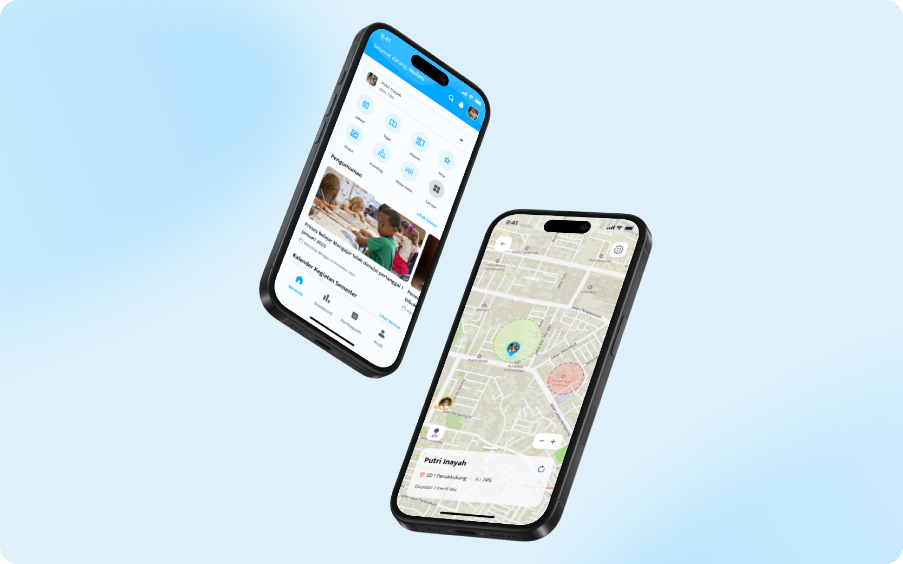
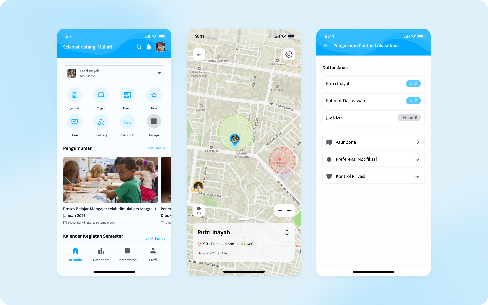
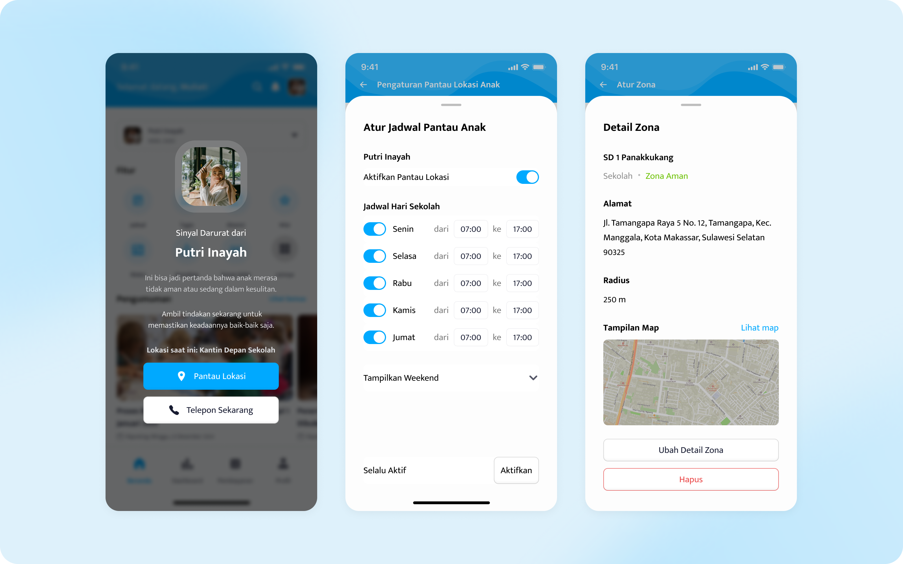

Aistech: Zone-Based Location Tracker Balancing Child Safety with Student Privacy for Schools

Client
SMARTSCHOOL is Aistech's own product for schools, giving parents and administrators tools to stay connected with their children's school life. One of its features, Smart-Location Tracker, focuses specifically on after-school safety.
Problem
Parents wanted reassurance that their children weren't visiting unsafe places after school hours, places like bars or other potentially harmful locations, but existing solutions meant constant, real-time tracking that felt invasive to students.
Process
The feature was proposed by the school based on concerns raised by parents, and as the one directing this feature's approach, I chose to shift away from continuous real-time tracking, similar to sharing a live location, toward zone-based detection instead. Parents and schools can mark specific points as safe (blue) or flagged (red) zones, and the app only notifies when a child's device enters one of these zones, not their constant whereabouts. Students retain control too. They can turn location sharing off, though doing so requires parental approval, with consent built into the flow from the start.
Outcome
Peace of Mind Without Constant Surveillance
Delivered a location-awareness feature now live and in use, reassuring parents without making children feel watched at all times, balancing child safety and student privacy in a single flow both sides could accept.

